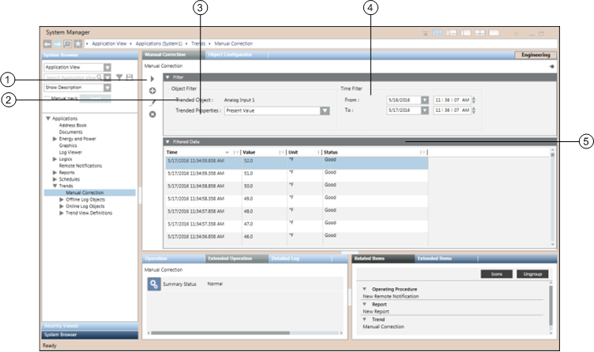
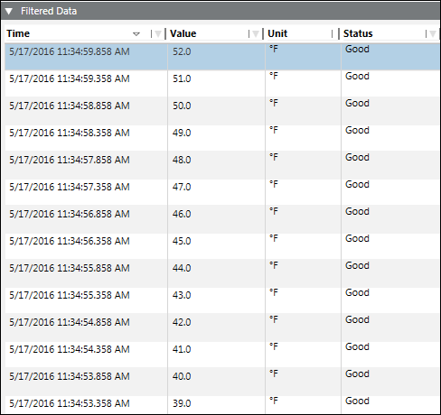

Manual Correction
The Manual Correction application allows you to add, modify, and delete values of trended properties of trended objects that are logged in online as well as offline trends.
The trend information such as date/time, value, status, and unit information pertaining to only a single trended property displays in a tabular form in the Filtered Data section.
By default, the data is displayed for a time period of one day. However, you can select the desired time range to fetch the latest data.
You can apply further sorting and filtering on the displayed data to get a more precise data set.
Manual Correction Workspace

| Name | Description |
1 | Manual Correction toolbar | Contains buttons for performing various actions on the Manual Correction application. |
2 | Trended Object | Displays the object whose property details are to be modified. |
3 | Trended Properties | Displays the trended properties of the trended object. If the object has multiple trended properties and is referenced in online as well as offline trends, then the multiple properties along with the names of the offline trends in which the object is referenced display. |
4 | Time Filter | Allows you to specify the time series for which you want to display the data. |
5 | Filtered Data | Displays information of the selected trended property of the object. |
Manual Correction Toolbar
The Manual Correction toolbar allows you to perform the following operations:
Icon | Name | Description |
| Run | Displays the data for the selected trended object property. |
| Add | Displays the Add Trend Entry dialog box to add new entries to the Filtered Data section. This button is disabled when you select multiple entries in the Filtered Data structure. |
| Edit | Displays the Edit Trend Entry dialog box with the details of the selected entry to be modified. |
| Delete | Displays the Delete Trend Entry dialog box for deleting the selected entry or entries from the Filtered Data section. |


Filtered Data
The Filtered Data section displays the information on the trended data in a columnar pattern in a tabular structure.
Values are displayed as per value scaled units (if configured). For more information, see Value Scale Units in Setting How Property Values Display.

| Description |
Time | Date/Time of the property value of the object. |
Value | Value of the trended property of the object. |
Unit | Unit of the trended property |
Status | Displays either of the following values: Good – Value of displayed data is good. Bad – Value of displayed data is bad as per IOWA standards. Added – Displayed value is added by user. Corrected – Displayed value is modified by user. |